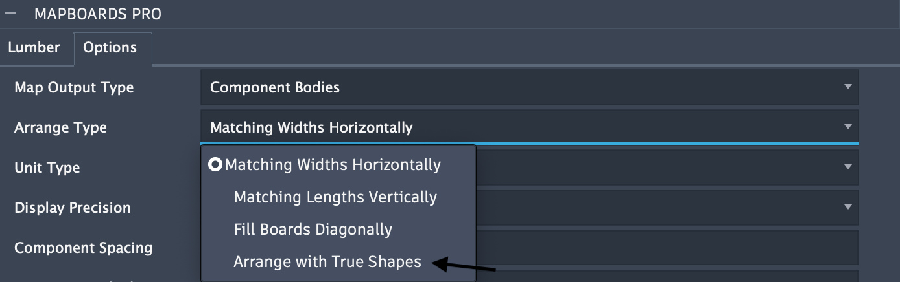

PLUS Features Description
Support for Assembly Designs
Fusion 360 has been updated to include three distinct design types: hybrid, part, and assembly. With PLUS enabled, MapBoards Pro can be run on both the legacy hybrid designs as well as assembly designs containing inserted parts.
Hybrid – Fusion has always supported a hybrid design: a single design that can contain both parts and assemblies with both internal and external references.
This legacy design type is supported both with and without PLUS features enabled.
Part - A part design is a new type of design that only supports modeling. A part design typically contains one or more bodies, along with all the construction geometry, sketches, and features used to create them. It does not contain other components or occurrences. Parts are the equivalent of creating a single external component within a hybrid design.
With PLUS, MapBoards Pro can be run on a Part when it is added to an assembly design.
Assembly - An assembly design is a new design type that supports only assembly modeling, and all parts and subassemblies used in the assembly must be external.
This new design type is only supported by the PLUS version of MapBoards Pro.
Support for Arrange with True Shapes
MapBoards Pro PLUS features adds an additional arrangement type, Arrange with True Shapes, leveraging Fusion’s advanced native arrange capabilities to provide improved material utilization and flexibility when mapping boards for users with either the Personal or Commercial Fusion 360 entitlement Plans.
When using this arrangement type the full compliment of mapping options are available to customize the created board layouts. In addition, the full compliment of post-mapping tasks can be applied to the mapped boards created with this arrangement type including SVG and DXF exports, report generation, manufacturing models, and the new Rearrange Boards. See Arrange Type.
The image below shows the arrange type options including the Arrange with True Shapes option.
{kind=link}
Rearrange Boards
The post-mapping task, Rearrange Boards, is available to modify existing mapped boards. This task automates the rearrangement of components both within and between boards. Selection support provides the ability to add to the list of existing mapped components of the selected board with components from other mapped boards.
Using selection enables shuffling of components onto a selected board and to try different arrangement methods and options to achieve improved material utilization.
When Rearrange Boards is invoked on a specific map it will load the original settings used to create the map. When Rearrange Boards task is run the settings used are saved in the map and will be used the next time the Rearrange Boards task is invoked.
The options provided for Rearrange Boards are numerous and include:
Four possible arrangement methods
Boards grain direction
Component spacing
Trim on board edges
Components can be rotated or flipped
If the rearrange fails to place all existing and selected components on the board, the user is notified with the opportunity to adjust the settings to achieve a successful rearrangement.
The image below show the Rearrange post-mapping task being invoked. It list the components currently mapped on the boards with their 2D bounding box dimensions. Each listed component has the option to be rotated or flipped. Selecting components from other mapped boards will be added to the list to be included when Rearrange Boards is run.